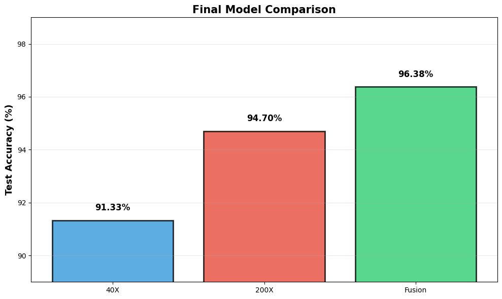

Breast Cancer Histopathology Classification
Multi-magnification deep learning on 9,109 tissue images, with Grad-CAM so every prediction shows the tissue behind it.
Impact: Fusing 40X and 200X reached 98.94% recall on malignant cases and 96.38% accuracy.
Responsible AI check: Recall was the priority metric because a missed cancer costs far more than a false alarm.